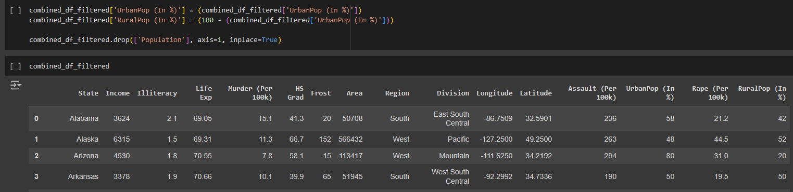

Description
Skills Applied: Python (Pandas), Inferential Statistics
Breakdown
1. Preprocessing
- In the initial stages of my project, I began by examining multiple csv files containing data on crime rates and demographics of various United States States and regions.
- Subsequently, I studied the data and identified the need for data preprocessing to ensure that the data is clean, before considering what dataframe to utilised for my analysis; dropping columns that are not needed, and changing variable names to a much more suitable name.
2. Feature Engineering

- I proceeded with feature engineering by creating new columns or grouping my data that would be useful for my analysis.
- For example, I grouped the population of urban and rural areas into percentage format, to better understand the distribution of population across different regions.
- Additionally, I grouped by langitude and longitude with its measure into like tropical, sub-tropical, temperate, equator, west hemisphere, etc.
3. Pearson Correlation Testing
- Lastly, through the implementation of the pearson correlation, I was able to identify my null hypothesis, and alternative hypothesis. With pearson correlation (p-value), I was able to find out which variables are statistically significant to assault crime rate.
- Additionally, a heatmap was generated to visually inspect the correlation between all variables.
- Through own hypothesis, I was able to come out with conclusions on which variables are statistically signficant in correspond to assult rate.